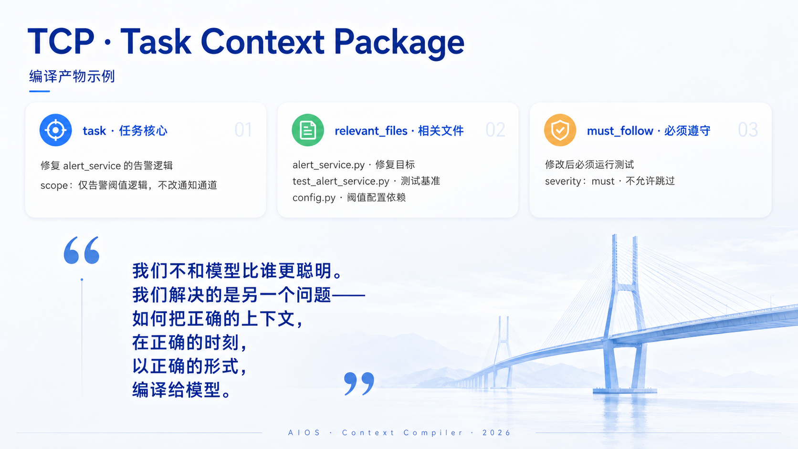

关键内容漏掉
规则、历史决策和失败经验明明存在，Agent 仍会错过，甚至不知道自己缺少信息。
问题不只是 Token 太多，而是外部知识没有在正确时间，以正确粒度进入正确的模型调用。
规则、历史决策和失败经验明明存在，Agent 仍会错过，甚至不知道自己缺少信息。
AGENTS、Skills、Memory、工具定义和历史会话不断常驻，模型读得更多，却不一定做得更对。
每轮真实上下文不可见，用户无法判断失败来自模型、检索、旧知识还是执行过程。
AIOS 不把所有文件直接拼进 Prompt。它提供受控流程和源文件，模型负责判断与蒸馏，系统负责隔离、追溯和验证。
只看用户消息、极简环境和源文件目录，形成任务契约、关键假设与读取计划。
只读取计划选中的文件片段，编译为短而可追溯的 Task Context Package。
新执行阶段只接收任务、编译结果和按需工具；每轮输入、Token 与结果完整留痕。

我们审阅了多种 Agent 工具的真实对话与执行轨迹，并用真实模型验证了上下文精简与隔离的价值。
可以先从一次设计评审或两周可证伪原型开始，再决定开源共同维护、项目制合作或长期合伙。